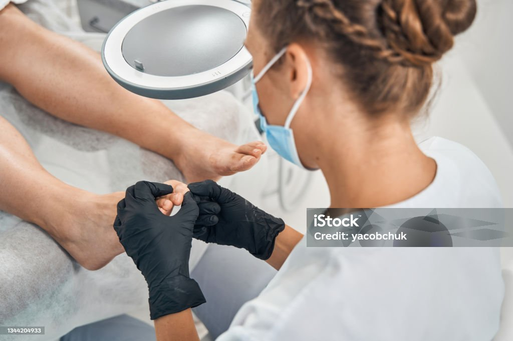

Julie BUI
Podologue Paris
8ème Arrondissement

Julie BUI
Pédicure Podologue
Podologue spécialisée dans la confection de semelles orthopédiques (orthèses) et les soins de pédicurie, je vous accueille dans mon cabinet à Paris pour une prise en charge complète de vos pieds.
Mes services incluent des consultations personnalisées pour soulager vos douleurs, corriger votre posture et améliorer votre confort au quotidien.
Grâce à des technologies de pointe, telles que l'analyse de la marche et la plateforme de pression, je conçois des orthèses sur mesure, adaptées à vos besoins spécifiques.
Le Cabinet
Situé à Paris, le cabinet de podologie moderne et conforme aux normes PMR offre des consultations personnalisées avec les dernières technologies d'analyse.
Les soins sur-mesure sont effectués avec des équipements de dernière génération dans des conditions d'hygiène irréprochables
Prenez rendez-vous en ligne pour bénéficier d'une consultation personnalisée.

Horaires d'ouverture
- Lundi : 9h - 19h
- Mardi : 9h - 19h
- Mercredi : 9h - 19h
- Jeudi : 9h - 19h
- Vendredi : 9h - 19h
- Samedi : Fermé
- Dimanche : Fermé
Informations pratiques
Rez-de-Chaussée
Métro et Bus
Métro - Miromesnil (lignes 9 et 13)
Métro - Monceau (ligne 2)
Bus - Hausmann - Miromesnil (ligne 84)
Parking public
Haussmann Berri 161 Boulevard Haussmann, 75008 Paris

Equipé d'un logiciel d'analyse de posture
Matériel pour la fabrication des semelles orthopédiques
Matériel pour la fabrication des semelles orthopédiques
Podologie
Il existe deux principales méthodes pour la fabrication des semelles orthopédiques.
La première, dite classique, repose sur la prise d'empreintes du pied et du gabarit de la chaussure, permettant la réalisation des semelles par assemblage des éléments.
La seconde méthode, celle des semelles orthopédiques thermoformées, utilise des coussins emprunteurs pour capturer l'empreinte du pied. Un gabarit chauffé est placé entre le pied et le coussin pour obtenir un moulage précis. Ce procédé garantit un ajustement optimal et un confort supérieur, particulièrement recommandé pour la correction orthopédique et la pratique sportive.
La Pédicurie
Le soin de pédicurie, effectué par un pédicure-podologue diplômé, est un acte médical indolore qui soulage efficacement les affections cutanées et unguéales du pied, telles que les cors, durillons, et ongles incarnés.
Réalisé dans des conditions d'hygiène strictes, il vise à prévenir la douleur et à maintenir la santé de vos pieds, que ce soit en cabinet ou à domicile. N'oubliez pas, ce soin est dédié à la santé de vos pieds et non à l'esthétique.
Pédicurie
Traitement des ongles, des callosités, et des infections fongiques pour maintenir la santé des pieds.

Orthèses plantaires
Conception de semelles orthopédiques sur mesure pour corriger les troubles posturaux et soulager les douleurs.
Podo-pédiatrie
Traitement des troubles de la marche et de la posture chez les enfants, assurant une bonne croissance et un développement sain des pieds.
Suivi des patients diabétiques
Suivi des patients diabétiques
Prise en charge des pieds des patients diabétiques, avec un soin particulier pour la prévention et le traitement des plaies et ulcères.
Podologie du sport
Analyse biomécanique pour prévenir et traiter les pathologies liées à la pratique sportive, et améliorer la performance.
Bilan podologique
Évaluation complète des pieds et de la posture pour diagnostiquer et traiter les dysfonctionnements.
Foire aux Questions
Un podologue, ou pédicure-podologue, est un professionnel de santé spécialisé dans la prévention, le diagnostic, et le traitement des pathologies du pied ainsi que des troubles posturaux. Il intervient pour soigner, prévenir et corriger les affections des pieds à tout âge.
Tout le monde ! Enfants, personnes âgées, sportifs ou encore individus effectuant des gestes répétitifs, tous peuvent bénéficier de son expertise. Le podologue est également essentiel pour les personnes souffrant de maladies chroniques comme le diabète ou la polyarthrite rhumatoïde.
Il est conseillé de consulter un podologue en cas de douleurs aux pieds, aux chevilles ou aux jambes, de troubles de la marche ou de la posture, pour des soins spécifiques comme les ongles incarnés, les cors ou pour un suivi régulier si vous êtes diabétique ou sportif.
Le soin de pédicurie est indolore. Réalisé par un pédicure-podologue diplômé, ce soin médical permet de traiter les affections cutanées sans douleur, tout en prenant soin de vos pieds pour éviter les complications.
Un bilan podologique est une évaluation complète des pieds et de la posture, permettant au podologue de diagnostiquer les troubles fonctionnels ou posturaux et de proposer des solutions adaptées, comme des orthèses plantaires ou des semelles orthopédiques.
Les diabétiques sont à risque de développer des complications aux pieds, telles que des plaies ou des ulcères. Un suivi régulier par un podologue permet de prévenir ces complications et de traiter rapidement tout problème pour éviter les aggravations.
La podologie du sport est une spécialisation du podologue qui analyse la biomécanique du pied chez les sportifs afin de prévenir et traiter les blessures, d'améliorer les performances et d'adapter les équipements, comme les semelles orthopédiques, aux besoins spécifiques du sport pratiqué.
Oui, il est recommandé de consulter un podologue si votre enfant présente des pieds plats ou d'autres troubles de la marche. Le podologue pourra évaluer la situation et, si nécessaire, prescrire des orthèses plantaires pour corriger la posture et favoriser un développement sain.
Le podologue intervient sur les affections cutanées, statiques et dynamiques du pied, et leurs interactions avec l’appareil locomoteur. Il propose des soins de pédicurie, la confection de semelles orthopédiques (orthèses plantaires), le suivi des patients diabétiques, des consultations pour les sportifs, des bilans podologiques, et des soins spécifiques pour les enfants.